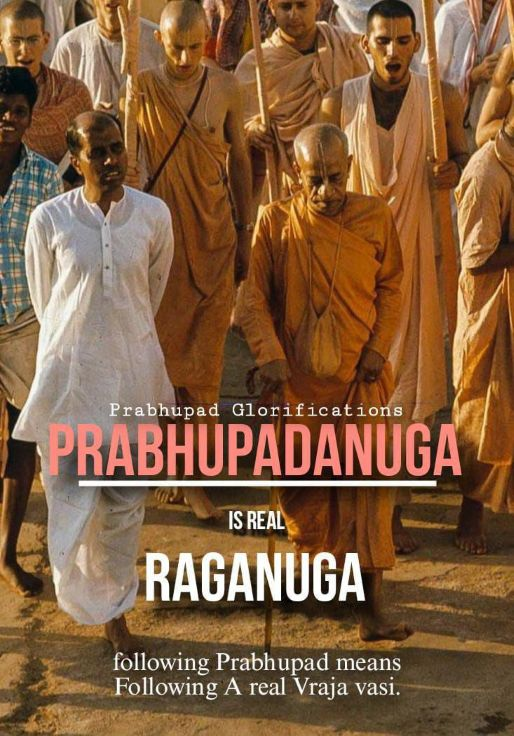

One who is a Prabhupada-anuga, is certainly a Raganuga-bhakta.

In Srila Visvanatha Cakravarti Thakura's Ragavarta-candrika (which contains a description of raganuga-sadhana), the essence of raganuga bhakti is explained thusly:
prathamatah krishnam smaran iti smaranasyatra
raganugayam mukhyetvam ragasya manodharmatvat
"As raga (attachment to Krishna) is the occupation of the mind, so also simultaneously must be smarana (remembering Krishna); therefore smarana is the main limb of sadhana for the practioner of raganuga-bhakti."
The idea here is that there can be no raganuga-bhakti without remembering Krishna. Therefore in essence raganuga-bhakti means the cultivation of remembrance of Krishna.
One who is a Prabhupada-anuga, is certainly a raganuga-bhakta. Is not Srila Prabhupada an eternal resident of Vrndavana? So if we aspire to follow Srila Prabhupada in his service to Krishna, there is no doubt that this is raganuga-bhakti. If we remember Srila Prabhupada's instructions and example in devotional service, that is smaranam, the essential limb of raganuga-bhakti. Srila Prabhupada's instruction to us is the same as Gauranga Mahaprabhu's to Lord Nityananda and Shrila Haridasa Thakura:
prati ghare ghere jai kara aei bhiksa bolo krishna bhaja krishna kara krishnasiksa
"Go from door to door and beg everyone you see to chant Krishna's holy name, worship Krishna and hear the philosophy of Krishna consciousness."
By executing this instruction, one is accepted into Lord Gauranga's lila in the mood of dasya-rasa. In this mood, one remembers one's own spiritual master as an eternal associate of Mahaprabhu who is handing His order to us:
pratah shriman-navadvipe dvi-netram dvi-bhujam gurum varabhaya-pradam santam smaret tan-nama-purvakam
"In the morning (before engaging in Krishna's service) one should remember the spiritual master as being situated in Navadvipa-dhama, having two eyes and two arms, as being peaceful, and as bestowing all benediction and fearlessness upon chanting his name."
And thus by the grace of Shri Shri Guru and Gauranga, the devotee who always remembers their order gets the adhikari (privilege) to enter in Radha-Krishna nitya-lila in Shri Vrndavana-dhama.
~Admin